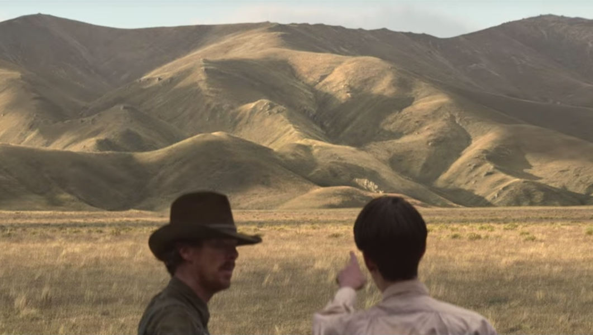
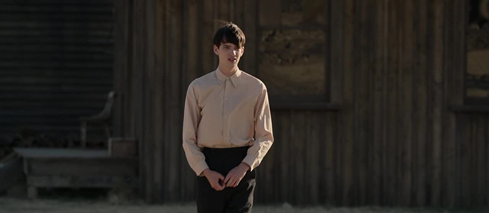

- Directed and written for the screen by Jane Campion
- Starring
- Benedict Cumberbatch
- Kirsten Dunst
- Kodi Smit-McPhee
I desperately wanted to like this film. After all it’s going to win a swag of Oscars shortly. I went once and couldn’t believe what I’d seen. I was so bewildered, it’s so bad. I thought, I must be mistaken, so I went back a second time. Believe me I’m not going back a third time, because it doesn’t improve.
When a film spawns hundreds of critics setting up essays on-line, to explain the film and tell you what it is about, like, don’t miss the moment when he touches the tree at three-quarters of the way through or you’ll misunderstand the bible quotation at the end. People are writing blogs to tell you how to interpret the film before you go to see it.
Call me old-fashioned, Dame Edna, but this is not the way I want to view an entertainment. Ms. Campion entertain me! What happened to story-telling. I viewed a beautiful print of ‘Red River’ recently. Apart from Joanne Dru stuffing up the ending, it was flawless. Oh, to have Montgomery Clift playing the son in this one, that would have been something. Or try ‘Shane’ there’s one about a mystery man, and he befriends a young boy also. Or what about the raw emotions of ‘Duel in the Sun’ when in the climactic scene the two lovers, Gregory Peck and Jennifer Jones slaughter each other in the canyon. I could go on.
The merest shadow of a classic Western haunts us constantlyBut back to the present. Lovers of ‘The Piano’ will be pleased to know there is a scene where a grand piano is delivered to the ranch and is carried inside by 5 or 6 brawny ranch hands. That’s about as good as it gets.
I admire Benedict Cumberbatch, I know he shows great versatility in his choice of roles. However, he should not have accepted this one. This is taking versatility too far. He is so out of place. He wears a set of chaps, which are straight out of the Keystone Cops genre. He looks like a Queensland Bottle Tree every time he walks into a scene, and he has a tinder box of naked gentlemen for his pleasure and enjoyment.
I was underwhelmed by Kirsten Dunst. Again, I wanted to like her, but the role offered here is so wooden, she could only emerge as a wooden figure. After receiving the piano, we find she can’t play, and comforts herself in her alcohol rather than play for her guests. One scene has her scrambling about amongst the trash in the back yard, to find a sip of left-over alcohol [shades of Ray Milland]. And why did she become an alcoholic so quickly? Didn’t she love her husband? Surely, he would have assisted her. Was Benedict so overbearing? He didn’t appear to be.
 "See the dog that this whole film is named after, Benedict? See it?"The boy is played by Kodi Smit-McPhee and he is so unlikeable he turns the audience against himself, so that we don’t care what he does or doesn’t do, as explained to us by the keyboard analysts. A little charisma would have helped here, no matter what he was up to. [As I said, try Montgomery Clift.] Each character you play, however unpleasant should have one or two traits which offer some endearment for the audience.
 Kodi standing awkwardly - this is how he looks for much of the filmPerhaps, if I’d seen the online explanations of the plot, before attending the movie, I might have been happier. On second thoughts, I don’t think that would have been the case.
I love Westerns, they are my favourite genre. And, as I said, I was looking forward to this one. However, to all involved, do yourselves a favour and tune in to ‘Yellowstone’ on Stan, or more importantly, the prequel ‘1883’, to see how it should be done. Or what about my all-time favourite, ‘Dances with Wolves’ directed by the great Kevin Costner, now there’s a movie for all film-makers to aspire to.
Star Rating: 1/5 - [just] I give it for the ‘chaps’ who carried in the piano. - [just] I give it for the ‘chaps’ who carried in the piano.